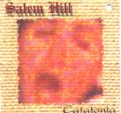

| Artist: | Salem Hill |
| Title: | Catatonia |
| Label: | Cyclops cycl 098 |
| Length(s): | 68 minutes |
| Year(s) of release: | 1996/2000 |
| Month of review: | [01/2002] |
| 1) | The Walking Dead | |
| 2) | Real | |
| 3) | Children Without Innocence | |
| 4) | Facade And Charade | |
| 5) | I Blinked | |
| A) The Winking Dead | ||
| B) Peculiar People | ||
| 6) | Habit Without Heart | |
| 7) | Catatonia | |
| 8) | I Turn My Back On You | |
| 9) | The Judgement | |
| 10) | Peculiar People | |
| 11) | Awake | |
| A) The Waking Dead |
... Real, which seems to be yet another shift of gear. This track definitely brings on more strength, but unfortunately Groves' voice doesn't have the stamina to bring this strength fully home. Real also brings some more progressive elements by not only being stronger, but also by some more complexity in the rhythm.
Children Without Innocence opens with the theme of the previous track, showing it better than it was shown before. Interestingly enough Groves' voice comes across stronger in this track as well, more enhancing it. The track closes with a more instrumental repetition of the theme, bringing it to full fruition. This culmination of the theme shared between the first three tracks is absolutely its climax.
Despite Facade And Charade's intricate intro, it develops into a pretty rocky track. It's still nice enough, but not as appealing as the tracks before it.
I Blinked starts off peacefully, moving up a gear later. Once again a track with a nice flow, with some acoustic guitars toward the end of the track. Despite the track being subdivided, it pretty much sounds like one song to me.
Habit Without Heart has more of a traditional song structure, moving towards a climax.
Catatonia is a melancholy track. Soft vocals, some seventies electronic piano sounds (which I associate with clavinet, without knowing whether I'm correct in doing so) and xylophone, moving on later in the track to a lengthy instrumental section.
I Turn My Back On You once again is a somewhat rockier track, featuring sharp compact guitar riffs as you would associate with a band like Rush.
The Judgement in the bio is said to be a classic. The haunting piano of the first part definitely gives it a more intense feel than most other songs, making it one of the more striking tracks of the album. Apart from that, its length and opus like feel will have helped. Along with it probably being the best track of the album. The middle of the track features a rather atmospheric instrumental bit, somewhat reminiscent of Marillion's Brave. The third part is once more a vocal one, to move off into a closing instrumental session. I'm surprised to find that this is one track, without subdivision even, considering definite sections in the track. Especially when considering the first three tracks and track five.
Peculiar People opens with a child singing the chorus, with what seems a Scottish accent or something. Don't expect to make out the words without reading them in the booklet. The track has a pretty happy atmosphere, in its folky influences almost like Fish's Internal Exile, but the once more bitter lyrics belie this gayness. I don't care much for this track.
Awake's opening features acoustic guitar and a mellow keyboard in the background. Later on electric guitars blend in, but the track remains pretty tranquil. Lyrically it seems to try to put what's gone before in perspective: I'm ok, really, or at least would be if I didn't feel all that terrible most of the time.
Maybe I'm misleading you with all this banter about TPE, but I can't ignore that the strong association I have with it reveals missed opportunities in Catatonia that feel like flaws to me. I absolutely like Catatonia, but can't help feeling that the end result falls short of its compositional strength, not bringing to life the possibilities for tension there are. The rocky tracks are nice in itself, but lack the intricateness which would really clinch it. The progressive tracks sometimes dourly lack bite. Personal faves are Children Without Innocence and The Judgement. Still, I guess anyone not knowing TPE wouldn't be bothered by qualms like these, and would simply find it a good album.
Oh, and in case you'd want to know: this album doesn't really compare with Not Everybody's Gold. The latter has a more American sound, is firmer, and has different influences.